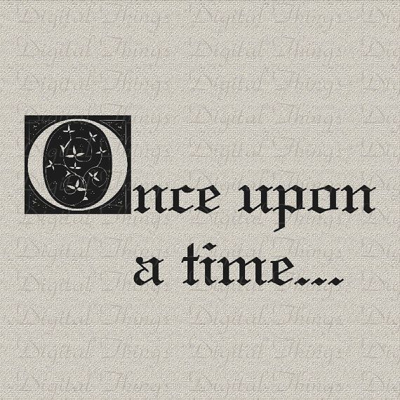

Se analizan los conceptos de literatura infantil, la cuestión del adjetivo infantil dentro de ciertas narrativas, el cuento y finalmemte el cuento de hadas como sugbenero de este último.
Aunque los origenes de este género son dificiles de trazar, es importante tener presente sus raices orales así como la recepción y recopilación posterior que los ha convertido en un gran cimiento de nuestra cultura.
Mediante el ejemplo del cuento de Rapunzel, observaremos la variación de temas y adaptaciones que se han ido dando, explorando nuevas narrativas a interes del autor como del contexto en el que la narración se situa.
Se trata la insercción de las nuevas tecnologías dentro del ámbito de la literatura infantil, y como se han visto categorizadas las creaciones surgudas en este nuevo paradigma. Además, se continuará dando ejemplos del cuento de Razpunzel, pero esta vez bajo las nuevas textualidades.
Breve explicación de los Sistemas Aumentativos y Alternativos de Comunicación y los recusos más utilizados para su aplicación.
Los Sistemas Aumentativos y Alternativos de Comunicación pueden ayudar a cualquier persona que tenga dificultades con el lenguaje debido a diferentes razones o que, simplemente, no entienden el idioma.
En este apartado veremos como mediante la aplicación de pictogramas podemos construir nuevas narrativas o formas de contar los cuentos que sean accesibles. Con las nuevas tecnologías, su uso se ha visto incrementado y adaptado a múltiples formatos.
Se propondrán una serie de actividades para poner en práctica los conceptos vistos a lo largo de este curso.